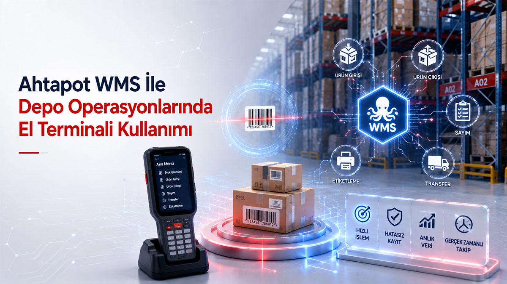

Depo &
Lojistik
10 Mart 2026
Ahtapot WMS İle Depo Operasyonlarında El Terminali Kullanımı
Ahtapot Depo Yönetim Sistemi sayesinde mal kabul, raf adresleme, barkodlu toplama ve sevkiyat süreçlerinde insan hatasını sıfıra indirin.
5 dk okuma
Devamını Oku